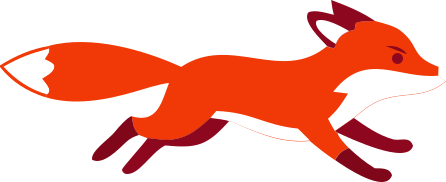
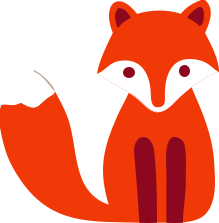
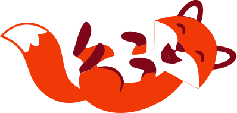
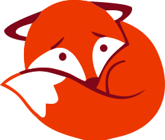
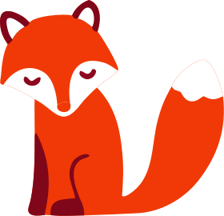
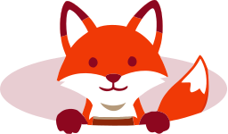

Candosa borrows from the global brands that figured out how to feel warm and competent at the same time. Anthropic taught us that craft is calm — generous whitespace, careful typography, and the confidence to say less. Canva showed us that gradients can carry a brand: soft, multi-color blends that invite rather than shout. Linear and Stripe prove that a serious product can still look approachable when type is set with intention and motion is restrained. The result is a Spanish gestoría that reads like a modern product company — orange brand color front and center, paper-cream surfaces, type that's bold without being loud, and gradients that suggest something kinder than a tax deadline.
The fox is our quiet co-star. He shows up peeking from behind a phone, sitting beside a number, or curling at the corner of an empty state — never narrating, never explaining. Use him sparingly: one fox per screen, always at human scale to the surrounding type, and only where a small dose of warmth lowers the temperature of the page. Six poses cover the moments we need; pick the one whose body language matches what's happening (peeking for a new feature, sitting for a stat, waving on success). If a page feels formal, let him peek. If a page feels heavy, let him sit. He's a smile, not a logo.
This brand is the front door to FoxUI — the product layer the user crosses into during onboarding. The two share the same palette (brand orange, paper cream, ink), the same Roboto type ramp, the same soft gradients and the same fox, so the handoff from marketing site to logged-in product feels like one room with a different light. When in doubt, design as if the user will scroll from a hero straight into a dashboard without noticing the seam.
Six words to write by. Use them as a filter before shipping any copy.
Plain language, never jargon. Sentences read like a friend explaining something at the bar, not a notario reading from a contract.
We say what we'll do, then do it. Concrete numbers and named people. No "world-class" or "best-in-class" — show, don't claim.
The user already has enough on their plate. Every line should lower the temperature: shorter, clearer, with the implied promise that we've got this.
A real person is behind every message. Use first names. Write the way a gestora would actually talk — warm, curious, not corporate.
Open doors, not walls. "Cuéntame" beats "Complete the form". The next step should always feel small and easy to start.
We work for them. Lead with what we'll handle, not what they have to do. The unspoken default is yes — "claro, lo miramos".
Soft multi-stop radial blends sit behind hero copy and section content, blurred 60–90px and animated in some places. The brand gradient powers the CTA band.
Brand orange leads. Cream is the base. Multi-color accents (pink, lilac, sky, peach) power the gradients.
The Candosa fox. Six poses, one personality — curious, helpful, slightly mischievous. Pick the pose that matches the moment.






Roboto across the board. Display weights at 700 with tight negative tracking. Outlined treatment uses a knockout fill matching --bg.
700 / 0.94 line / -0.045em700 / 1.0 line / -0.04em700 / 1.1 line / -0.025em400 / 1.5 line / -0.005em400 / 1.55 line700 / 0.08em tracking / uppercaseButtons, pills and tags. Light-mode defaults; the primary button keeps its white fill inset.
Four corner sizes plus the pill. Big surfaces lean on --r-xl; cards on --r-lg.
14px24px32px999pxSubtle hairlines on resting cards; bigger soft shadows on hover. Brand glow reserved for hero phone and price emphasis.
0 1px 0 rgba(17,33,45,.03)0 8px 22px -10px rgba(17,33,45,.18)0 22px 44px -20px rgba(17,33,45,.20)0 30px 60px -20px rgba(240,57,6,.30)